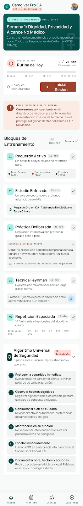
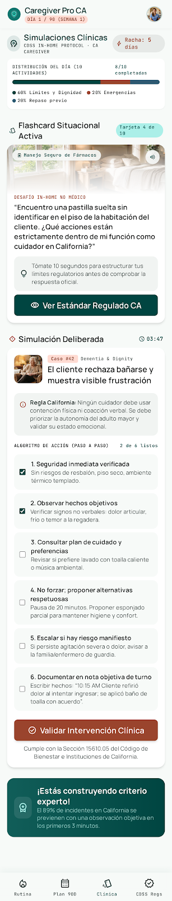
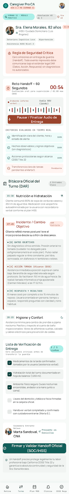
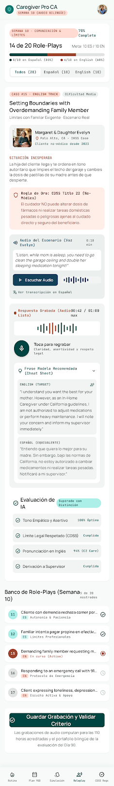
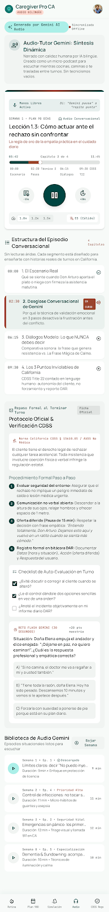
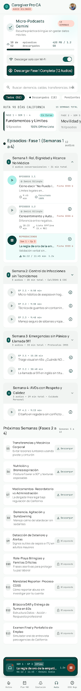
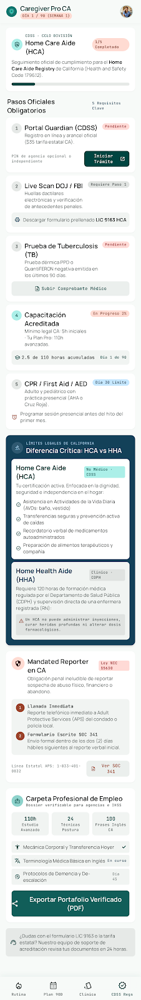
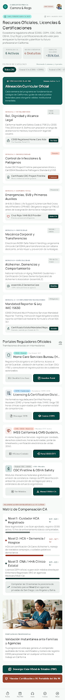
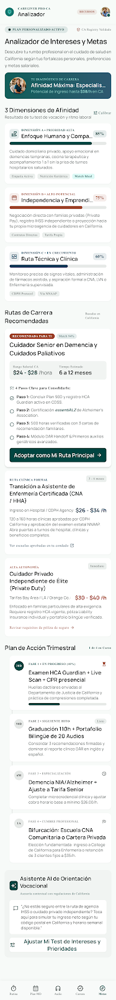
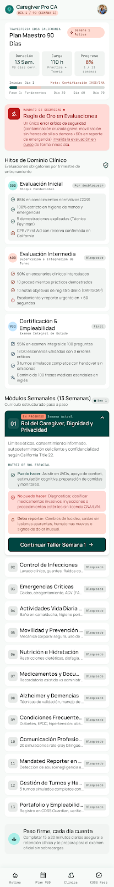

Diseño (Stitch) para una app de entrenamiento y certificación dirigida a cuidadores no médicos, asistentes de enfermería (CNA) y trabajadores IHSS en California. Cada tarjeta abre una pantalla independiente y funcional del prototipo.

Rutina Diaria (75 min)
Panel principal con la sesión guiada del día y el progreso de 90 días.

Escenarios y Flashcards
Práctica de competencias con tarjetas y escenarios de decisión.

Simulación de Turno y Handoff
Práctica de entrega de turno y reporte estructurado.

Role Play Bilingüe (Semana 10)
Ejercicio de diálogo en audio en español e inglés.

Audio Lecciones (Manos Libres)
Repaso formal guiado por voz con Gemini para estudiar sin pantalla.

Biblioteca de Audios (13 Semanas)
Lecciones descargables para escuchar sin conexión.

Requisitos y Certificación CA
Guía de requisitos oficiales de California (CDSS Title 22, IHSS, CNA).

Recursos por Semana
Enlaces oficiales y certificaciones organizados por semana del plan.

Analizador Vocacional
Evaluación de metas de carrera dentro del cuidado no médico.

Plan de 90 Días y Evaluaciones
Línea de tiempo completa del programa y sus evaluaciones.